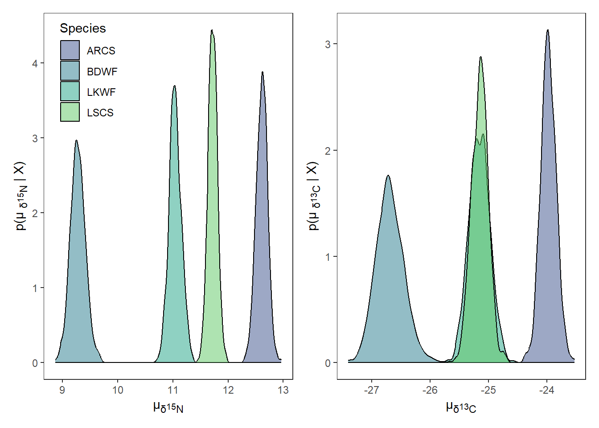
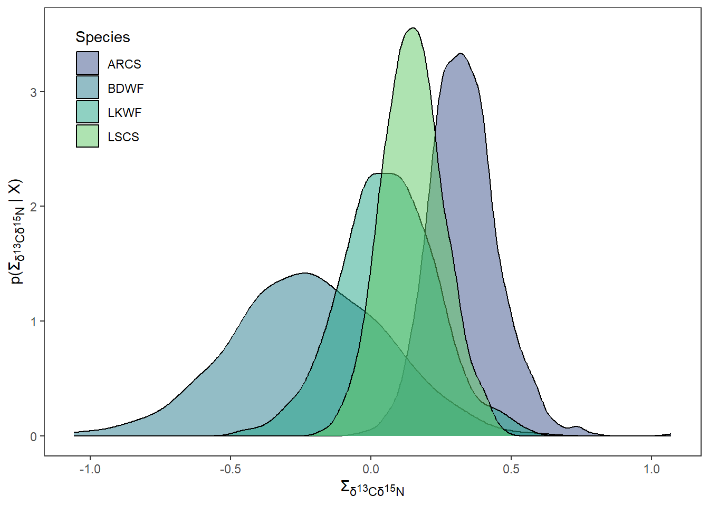
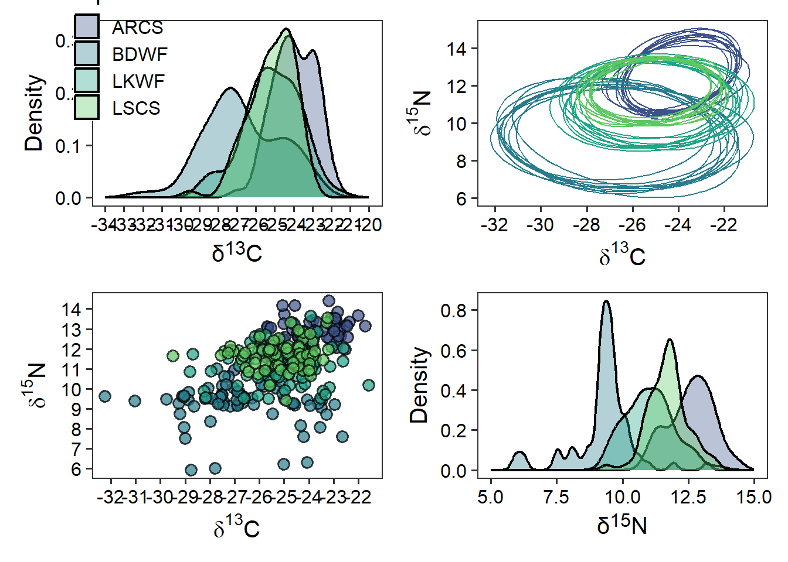

{
library(dplyr)
library(ellipse)
library(ggplot2)
library(ggtext)
library(here)
library(nicheROVER)
library(purrr)
library(patchwork)
library(readr)
library(tidyr)
}Trophic Niche Size and Overlap
stable isotopes
Trophic dynamics
food webs
Our Objectives:
The purpose of this vignette is to use {ggplot2} to visualize estimates of trophic niche size and overlap of multiple freshwater fish. This vignette can be used for additional purposes including estimating niche size and overlap among different groups of aquatic and/or terrestrial species. Furthermore, niche size and overlap of different behaviour types of the same species indicated through acoustic telemetry can be estimated (e.g., differences in habitat occupancy).
Step 1: Bring in trophic niche data
First we will load the necessary packages to preform the analysis and visualization. We will use {nicheROVER} and {ellipse} to preform the analysis. We will use {dplyr}, {purrr}, and {tidyr} to manipulate data and iterate processes. Lastly, we will use {ggplot2}, {ggtext}, and {patchwork} to plot, add labels and arrange plots.
For the purpose of the vignette we will be using the fish dataframe that is available within {nicheROVER}. We will remove \(\delta\)34S for simplicity of the vignette. If more than two isotopes or metrics are being used to compare niche size and overlap, you can make modify the code to include the additional isotopes or metrics.
we will first use the function janitor::clean_names() to clean up column names and remove \(\delta\)34S column. For your purposes you will need to replace fish with your dataframe either by loading a csv or rds with your data. You can do this multiple ways, I prefer using readr::read_csv() but base R works perfectly fine.
df <- fish %>%
janitor::clean_names() %>%
select(-d34s)If there are any isotopic values that did not run and are NA, they will need to be removed because {nicheROVER}’s functions will not accommodate values of NA.
Step 2: Estimate posterior distribution with Normal-Inverse-Wishart (NIW) priors.
We will take 1,000 posterior samples for each group. You can change this but suggest nothing less than 1,000.
nsample <- 1000We wlll then split the dataframe into a list with each species as a dataframe object within the list, We will then iterate over the list, using map(), to estimate posterior distribution using Normal-Inverse-Wishart (NIW) priors.
fish_par <- df %>%
split(.$species) %>%
map(~ select(., d15n, d13c)) %>%
map(~niw.post(nsample = nsample, X = .))Step 3: Extract \(\mu\) values from list object containing posteriors
We will use a combination of map() and pluck() to first extract the list of posteriors for \(\mu\). We will extract each vector object for \(\mu\) of each species using imap() and convert them into a tibble.
We then will merge each \(\mu\) dataframe together for each species using bind_rows(). We will add species and sample_number back into the dataframe.
df_mu <- map(fish_par, pluck, 1) %>%
imap(~ as_tibble(.x) %>%
mutate(
metric = "mu",
species = .y
)
) %>%
bind_rows() %>%
mutate(
species = factor(species,
levels = c("ARCS", "BDWF", "LKWF", "LSCS"))
) %>%
group_by(species) %>%
mutate(
sample_number = 1:1000
) %>%
ungroup()We need to manipulate df_mu into long instead of wide format for the rest of the analysis. We will also add in a column that is the element abbreviation and neutron number to be used in axis labeling.
df_mu_long <- df_mu %>%
pivot_longer(cols = -c(metric, species, sample_number),
names_to = "isotope",
values_to = "mu_est") %>%
mutate(
element = case_when(
isotope == "d15n" ~ "N",
isotope == "d13c" ~ "C",
),
neutron = case_when(
isotope == "d15n" ~ 15,
isotope == "d13c" ~ 13,
)
)Step 4: Extract \(\Sigma\) values from list object containing posteriors
We will use a combination of map() and pluck() to first extract the list of posteriors for \(\Sigma\). We will extract each vector object from each the \(\Sigma\) of each species using imap() and convert them into a tibble
We will manipulate df_sigma from wide to long format. When doing so we create two columns, id and isotope, that identify the two isotopes that \(\Sigma\) is being estimated for.
df_sigma <- map(fish_par, pluck, 2) %>%
imap(~ as_tibble(.x) %>%
mutate(
metric = "sigma",
id = c("d15n", "d13c"),
species = .y
)
) %>%
bind_rows() %>%
pivot_longer(cols = -c("id", "species", "metric"),
names_to = "isotope",
values_to = "post_sample"
) %>%
separate(isotope, into = c("isotopes", "sample_number"), sep = "\\.")We then need to remove $ values for when the two columns are the same isotope.
df_sigma_cn <- df_sigma %>%
filter(id != isotopes)Step 5: Plot posterior distrubtion of \(\mu\) and $Sigma using {ggplot2}
df_sigma_cn <- df_sigma_cn %>%
mutate(
element_id = case_when(
id == "d15n" ~ "N",
id == "d13c" ~ "C",
),
neutron_id = case_when(
id == "d15n" ~ 15,
id == "d13c" ~ 13,
),
element_iso = case_when(
isotopes == "d15n" ~ "N",
isotopes == "d13c" ~ "C",
),
neutron_iso = case_when(
isotopes == "d15n" ~ 15,
isotopes == "d13c" ~ 13,
)
)posterior_plots <- df_mu_long %>%
split(.$isotope) %>%
imap(
~ ggplot(data = ., aes(x = mu_est)) +
geom_density(aes(fill = species), alpha = 0.5) +
scale_fill_viridis_d(begin = 0.25, end = 0.75,
option = "D", name = "Species") +
theme_bw() +
theme(panel.grid = element_blank(),
axis.title.x = element_markdown(),
axis.title.y = element_markdown(),
legend.position = "none"
) +
labs(
x = paste("\u00b5<sub>\U03B4</sub>", "<sub><sup>",
unique(.$neutron), "</sup></sub>",
"<sub>",unique(.$element), "</sub>", sep = ""),
y = paste0("p(\u00b5 <sub>\U03B4</sub>","<sub><sup>",
unique(.$neutron), "</sub></sup>",
"<sub>",unique(.$element),"</sub>",
" | X)"), sep = "")
)
p <- posterior_plots$d15n +
theme(legend.position = c(0.18, 0.84)) +
posterior_plots$d13c
p
sigma_plots <- df_sigma_cn %>%
group_split(id, isotopes) %>%
imap(
~ ggplot(data = ., aes(x = post_sample)) +
geom_density(aes(fill = species), alpha = 0.5) +
scale_fill_viridis_d(begin = 0.25, end = 0.75,
option = "D", name = "Species") +
theme_bw() +
theme(panel.grid = element_blank(),
axis.title.x = element_markdown(),
axis.title.y = element_markdown(),
legend.position = "none"
) +
labs(
x = paste("\U03A3","<sub>\U03B4</sub>",
"<sub><sup>", unique(.$neutron_id), "</sub></sup>",
"<sub>",unique(.$element_id),"</sub>"," ",
"<sub>\U03B4</sub>",
"<sub><sup>", unique(.$neutron_iso), "</sub></sup>",
"<sub>",unique(.$element_iso),"</sub>", sep = ""),
y = paste("p(", "\U03A3","<sub>\U03B4</sub>",
"<sub><sup>", unique(.$neutron_id), "</sub></sup>",
"<sub>",unique(.$element_id),"</sub>"," ",
"<sub>\U03B4</sub>",
"<sub><sup>", unique(.$neutron_iso), "</sub></sup>",
"<sub>",unique(.$element_iso),"</sub>", " | X)", sep = ""),
)
)
p1 <- sigma_plots[[1]] +
theme(legend.position = c(0.1, 0.82))
p1
Step 6: Estimate niche ellipse
We need to manipulate df_sigma back to wide format for ellipses.
df_sigma_wide <- df_sigma %>%
pivot_wider(names_from = id,
values_from = post_sample)Next we will use a for loop to estimate niche ellipses for all 1,000 samples. The default confidence level is 0.95 but can be adjusted by changing p.ell.
p.ell <- 0.95We will then create a vector of unique species (i.e., groups), that we loop over.
species_name <- unique(df_sigma_wide$species)Next create an empty list to dump the results of the for loop.
all_ellipses <- list()We then will use the following for loop. First it subsets mu and sigma objects by species. Then it extracts \(\mu\) and \(\Sigma\) values for each sample for each species. Then \(\mu\) and \(\Sigma\) are given to ellipse() from {ellipse} that will generate a unique ellipse based on the confidence interval for each sample (e.g., 1,000 samples). We need to add in a dummy variables (ell and post.id) to build in the first loop that we will add to within the second loop.
If you are to have additional isotopes or metrics, you will need to modify this loop to include them. Specifically ellipse() can only work within two-dimensions, not three so you will have to create multiple ellipse() calls for each combination of isotopes or metrics.
for (i in 1:length(species_name)) {
sigma_species <- df_sigma_wide %>%
filter(species %in% species_name[i])
mu_species <- df_mu %>%
filter(species %in% species_name[i])
ell <- NULL
post.id <- NULL
for(j in 1:length(unique(sigma_species$sample_number))) {
sigma_ind <- sigma_species %>%
filter(sample_number %in% sample_number[j]) %>%
dplyr::select(d15n, d13c)
Sigma <- as.matrix(sigma_ind, 2, 2)
row.names(Sigma) <- c("d15n", "d13c")
mu <- mu_species %>%
filter(sample_number %in% sample_number[j]) %>%
dplyr::select(sample_number, d15n, d13c) %>%
pivot_longer(cols = -sample_number,
names_to = "isotope",
values_to = "mu") %>%
.$mu
out <- ellipse::ellipse(Sigma, centre = mu, which = c(1, 2), level = p.ell)
ell <- rbind(ell, out)
post.id <- c(post.id, rep(j, nrow(out)))
}
ell <- as.data.frame(ell)
ell$rep <- post.id
all_ellipses[[i]] <- ell
}We then will then take the resulting list and merge together to create a dataframe that can be used in plotting.
# combine ellipose list into dataframe and add species names back in
ellipse_df <- bind_rows(all_ellipses, .id = "id") %>%
mutate(
species = factor(
case_when(
id == "1" ~ "ARCS",
id == "2" ~ "BDWF",
id == "3" ~ "LKWF",
id == "4" ~ "LSCS",
), level = c("ARCS", "BDWF", "LKWF", "LSCS")
)
) %>%
as_tibble()We will randomly sample 10 ellipses out of 1000. You can change this but this seems pretty standard.
ellipse_df %>%
group_by(species, rep) %>%
nest() %>%
group_by(species) %>%
slice_sample(n = 10, replace = TRUE) %>%
ungroup() %>%
unnest(cols = c(data)) -> random_ellipse Step 7: Plot ellipses, densities of each istope, and isotope biplot
We will first plot the ellipse for each species
ellipse_plots <- ggplot() +
geom_polygon(data = random_ellipse,
mapping = aes(x = d13c, y = d15n,
group = interaction(rep, species),
color = species),
fill = NA,
linewidth = 0.5) +
scale_colour_viridis_d(begin = 0.25, end = 0.75,
option = "D", name = "species",
) +
scale_x_continuous(breaks = rev(seq(-20, -40, -2))) +
scale_y_continuous(breaks = seq(6, 16, 2)) +
theme_bw(base_size = 15) +
theme(axis.text = element_text(colour = "black"),
panel.grid = element_blank(),
legend.position = "none",
legend.title.align = 0.5,
legend.background = element_blank()) +
labs(x = expression(paste(delta ^ 13, "C")),
y = expression(paste(delta ^ 15, "N")))We need to turn df into long format to iterate over using imap() to easily create density plots
iso_long <- df %>%
pivot_longer(cols = -species,
names_to = "isotope",
values_to = "value") %>%
mutate(
element = case_when(
isotope == "d15n" ~ "N",
isotope == "d13c" ~ "C",
),
neutron = case_when(
isotope == "d15n" ~ 15,
isotope == "d13c" ~ 13,
)
)We will then make density plots for each isotope using geom_density()
iso_density <- iso_long %>%
group_split(isotope) %>%
imap(
~ ggplot(data = .) +
geom_density(aes(x = value,
fill = species),
alpha = 0.35,
linewidth = 0.8) +
scale_fill_viridis_d(begin = 0.25, end = 0.75,
option = "D", name = "Species") +
theme_bw(base_size = 15) +
theme(axis.text = element_text(colour = "black"),
panel.grid = element_blank(),
legend.position = c(0.1, 0.84),
legend.title.align = 0.5,
legend.background = element_blank(),
axis.title.x = element_markdown()) +
labs(x = paste("\U03B4",
"<sup>", unique(.$neutron), "</sup>",unique(.$element),
sep = ""),
y = "Density")
)
d13c_density <- iso_density[[1]] +
scale_x_continuous(breaks = rev(seq(-20, -34, -1)),
limits = rev(c(-20, -34)))
d15n_density <- iso_density[[2]] +
scale_x_continuous(breaks = seq(5, 15, 2.5),
limits = c(5, 15)) +
theme(
legend.position = "none"
)Lastly we will use geom_point() to make isotopic biplot.
iso_biplot <- ggplot() +
geom_point(data = df, aes(x = d13c, y = d15n,
fill = species),
shape = 21, colour = "black",
stroke = 0.8,
size = 3, alpha = 0.70) +
scale_fill_viridis_d(begin = 0.25, end = 0.75,
option = "D", name = "species") +
scale_x_continuous(breaks = rev(seq(-20, -39, -1))) +
scale_y_continuous(breaks = seq(5, 17, 1)) +
theme_bw(base_size = 15) +
theme(axis.text = element_text(colour = "black"),
panel.grid = element_blank(),
legend.position = "none",
legend.title.align = 0.5,
legend.background = element_blank()) +
labs(x = expression(paste(delta ^ 13, "C")),
y = expression(paste(delta ^ 15, "N")))Step 8: Use {patchwork} to make this into a paneled figure.
p2 <- d13c_density + ellipse_plots + iso_biplot + d15n_density
p2